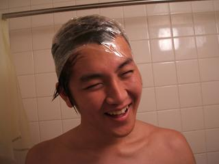
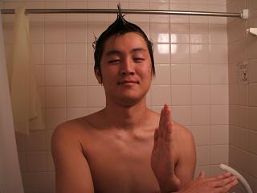
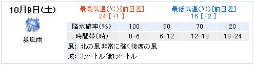
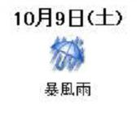

日々、想ふ
〜過去感じたことがつれづれと〜
（できるだけ最大化してお読みください）
日々、想ふ
先生もっとがんばらナイト。１０/１５
本人も気付いたみたいなのでここでも紹介、
実はちょっと前から新しくリンク追加してます、
高校の友達うのきのHP「
5TH SUNS」。
勝手に名前出したけどまずくないよね？
お前はそういうことで怒るような男じゃないから大丈夫よね？
こんな顔をHP上にさらされてるやつもいるんだから

あんまり気にするなよ。
ってか同じ府内に住んでるんだから遊びに来いよ、
今髪伸びてきてて、でも髪切りにいく金ないからまた髪切ってくれって。
最近ちょっと寂しいんだよ相手してくれよ。
来ないんだったらこっちから行くぞ。
って思いのたけぶつけてたら話がそれてしまってました、
漢字の変換うまくいかんくてひらがなで登場、
うのきです。
って名前間違えた俺はタケユキですよ、タケユキです。
今日は金曜日、１限が英語の授業の金曜日。
野菜生活飲みながらチャリこいで、
すれ違う人にちょっと奇異の目で見られながら教室へ。
席に座って授業が始まるの待ってたら
開始時間ちょっと過ぎてから先生到着。
どうやら今日は英語に関するビデオを見るらしい。
今日は楽そうだな〜と思ってたら
なんか先生探し物しに教室出て行った。
先生帰ってきた時には
授業始まって４０分経ってた。
それからビデオ始まって流れてきたのはNHK英会話番組
「
英語でしゃべらナイト」。
なんか韓国特集で冬ソナについてやってた、英会話番組なのに。
このビデオが４５分。
残りの５分で出席とって
授業終了。
いいんですか？これで。
今日の一言：毎回こんな授業だったらいいなあ。
今日の追加：想ひ出「
海外旅行〜タイ・カンボジア編〜」追加しました。
My Mother。１０/１４
米が・・米が尽きたぁ・・、タケユキです。
学校終わって帰ってきて晩ご飯食べるのに米炊こうとしたら
米びつが空っぽである事実に気がつきました。
普段夕食で一番栄養をとることになってるのに
晩ご飯に米がないなんて米を主食とする人種としてあるまじき行為。
どっちかって言うと俺は麺が主食の生活をしていますが。
今から米買いに出るのもだるいしなあと思ってたら
来客を告げるベルが鳴る。どうやら宅急便みたいだ。
届けられたダンボールの箱は実家からの荷物。
開けてみるとその中には米が。
そういや最近親に「米減ってるかっていったら減ってる」みたいな話をした覚えが。
よく分かってんじゃん、おかん。
ダンボールの中には米以外にもいくつか食べ物が入ってた。
お菓子や缶詰、みかんなどなど。
びっくりしたのはこれも入ってたこと。

昨日から「一日一本野菜生活運動」を始めたことを知ってたかのような
送り物。
よく分かってんじゃん、おかん。
でもほんとによく分かってたのは
俺が「一日一本野菜生活運動」を始めたことじゃなくて
俺が全然野菜食べてないことなんだろうけど。
今日の実験：回路がうまく動きませんでした。
笑い飛ばせない苦しみ。〜食事中には読まないで〜１０/１３
すいません、お腹痛いんですけど、タケユキです。
いきなりですがここで最近の食生活を紹介しようと思います。
朝食・・袋のラーメン
昼食・・袋のラーメンかチャーハン
夕食・・誰かと飲んでる（焼肉）、レトルトのカレー、それかご飯と冷凍のハンバーグ
健康に気を使ってるレベルは
「カップラーメンは体に悪いから袋のラーメンにしよう」程度のレベル。
もちろん昼食のチャーハンはご飯とチャーハンの素のみの料理。
この生活が学校始まってから、もしくは始まる前から続いてます。
何が足りないか分かりますか？
そうです野菜なんです。
ここ数ヶ月自分で野菜を買った記憶がありません。
焼肉とかやっても俺は肉しか食べないから
その名の通りの焼肉になるだけ。
人間が野菜、つまるところ食物繊維を採らなかったらどうなるか知ってますか？
野菜嫌いな人は経験あるかも知れません、
便秘です。
簡単な話うんちが出なくなんのね。
栄養は偏りながらも毎日３食食べてるわけだから
トイレには行きたくなるわけですよ。
そのせいか昔から僕はトイレに行く前に本棚の前に立って
トイレに持っていく本を選ぶ癖があります、最初から長期決戦を覚悟なわけです。
寝る前に「うんこー！」とか言ってトイレに入って
２分もしないうちに出てくるような人間とは
とてつもなくかけなれている存在なわけです。
食事中の人がここを見ていたら気分を害すると思うので
ここからはトイレを戦場と呼ぶことにします。
今日の戦況は非常にひどく戦場に持ち込んだ小説「恋愛寫眞」を
50頁ばかり読み進めるありさま。
戦場から逃げ帰った時には体力はひどく消耗、
今からバイトかと思うともう憂鬱で憂鬱で。
しかもちょっと調べてみたら便秘っていうのは
痔や大腸ガンの原因になるらしいのね。
食物繊維を採らないがために戦場でボロボロになり
挙句の果てに痔になって大腸ガンで逝く・・・。
食物繊維を採らないがために・・・。
それだけは、それだけは避けたい。
というかそんな死に方は嫌だ。
昔高校時代にちょっとやってたんだけど
今日から野菜生活を一日一本飲んでいきたいと思います。
なんか新しい
野菜生活でてるみたいだし。
よし、これで便秘ともおさらばだ。
今日の毎回言われてること：あきらめて野菜食え。
今日の家計簿：
| 関西ウォーカー |
３４０円 |
| 食料 |
３９２円 |
| 野菜生活（緑）３本 |
３０６円 |
| DVD「ライオンキング２」 |
２９４０円 |
| DVD「アラジン〜トリロジーボックス〜」 |
５５５０円 |
| 計 |
９５２８円 |
笑い飛ばせる強さ。１０/１２
ノンフィクションです、登場する人物名、団体名は
実在するものと全く同一のものです、タケユキです。
先の土曜日、場所は神奈川県は小田急生田駅近辺に住む将章君
（実名）は
とある決心を固めていました。
食欲の秋、読書の秋、そして、恋愛の秋。
そう、好意を寄せる女の子に想いを伝える決意を。
ハイテク化したこの時代、想いを伝える手段というのは多々あります、
手紙はもちろん、電話やメール。
しかし、自分の気持ち、特に想いを打ち明けるとなると
やはりここは直接会って伝えるのが男というもの。
将章君も直接想いを打ち明けようと決意します。
しかしこの日相手はディズニーランドでバイト中。
でもそこのところの下調べは万端、
この日彼女のバイトは３時で終わることを知っています。
将章君の住むところからディズニーランドがある舞浜まで
ゆうに１時間以上かかります。
彼女は会いにくるなんて知ってるはずがないですから
遅れようものなら会うこともかなわず彼女は千葉の家に帰ってしまう。
用意をすませて１時に家を出発。
電車を乗り継ぎ３時前に舞浜のひとつ前の駅まで到着、
そろそろ彼女に会いに来たことを知らせるべくメール。
まあまだバイト終わってないだろうからすぐには返事はこないだろう、
そう気を抜いていた瞬間ケータイがメールを受信。
早すぎる返信に驚きを隠せない将章君。
返事の内容はもうバイトは終わってることを知らせる内容。
動揺しながらも返事を送る、「今どこにいるよ？」と。
またしてもすぐに返信が来る。
「柏駅（
舞浜から約一時間行った千葉のとある駅）
」
結果はこの時点で決していたのかもしれません。
でもここまで来てはもう引き返すこともままならぬ。
しかし会うこともままならぬ。
だからと言ってメールで想いを伝えるわけにはいかぬ、
男、いや、
漢として。
男、いや、漢として。
意を決して彼女へ電話、想いを伝えるために。
この話の結末は書かないけども、
君は彼女のミッキーにはなれなかったけど
俺にとっては永遠のミッキーだから。
だから元気出せ、
将章君おっさん。

今日のおっさん：ミッキーじゃなくてウルトラマン？
今日の家計簿：
| 古本屋で買った小説「恋愛寫眞」「いま、会いにいきます」 |
１５００円 |
| 雑貨 |
５８５円 |
| 病院代 |
２８４０円 |
| 計 |
４３２５円 |
ちょっとネタ古。１０/１１
昨日読んでるって言ってた小説「四日間の奇蹟」読み終わりました、
って言っても一日中家で本読んで過ごしたりしませんでしたよ、
この秋はアウトドアに攻めていきたい、タケユキです。
っていっても今日出かけたのは梅田だったけど。
一人で買い物行っただけだけど。
別に寂しくなんかないやい。
ナンバーワンでもオンリーワンでもなくていい、
所詮俺はロンリーワン。
今日の一匹狼：クレジットカードを使う勇気が持てません。
今日の家計簿：
| 食料等 |
８９８円 |
| 雑貨 |
２４１５円 |
| 計 |
３３１３円 |
またひとつ。１０/１０
今友達に借りた小説「四日間の奇跡」を読んでます、
四日間のうち一日目が終わりましたこの小説おもしろいか
もしれません、
まだ一日目なのにヘリコプターが落ちてくんのよ、
この調子なら４日目にはジャンボジェットが落ちてきてもおかしくありません。
でもこれじゃなんか話の内容が不謹慎です、
それにたぶん題名にある奇跡はこんな奇跡じゃない。
実際の小説は別にそんなぶっ飛んだ面はない感動小説らしいです。
これから読もうとしてた人内容ちょっとしゃべってしまってごめんタケユキです。
今日は一週間ぶりにレストランの方のバイト、
ただ最近バイト入るのが憂鬱でシフトを休みにしまくってたからなんだけど。
夕方からバイト行って終わったのが１２時前。
梅田からうちに帰る電車の終電一歩手前って感じですよ、
しかも今日は帰り道が一人だったから暗い夜道を一人。
なんかさみしくなったからコンビニで酒と
「MONSTER」や「20世紀少年」、「YAWARA!!」とかで
有名な浦沢直樹の新作「PLUTO(プルートウ)」を買ってみた。
電車の中はそれで時間つぶせたんだけど
家に帰って本棚に入れようとしたら、置く場所がない。
なんでこんなに本がたくさん？
冷静に考えて今集めてるマンガを列挙してみた、
「ONE PEACE」「HUNTER×HUNTER」「冒険王ビイト」「クレイモア」
「ブラックジャックによろしく」「ジパング」「KATSU!」「太陽の黙示録」
「リアル」「シガテラ」「新世紀エヴァンゲリオン」「ZETMAN」
「バガボンド」、
これに加えて今日から「PLUTO(プルートウ)」
・・・・・こりゃ置くとこもないわ。
今日の疑問：なんでこんなに集めてるんだろう。
今日の家計簿：
| 酒＆マンガ代 |
６８７円 |
| 計 |
６８７円 |
荒れ狂う脅威。１０/９
今日飲みすぎて帰り吐きそうになりました、タケユキです。
台風来るはずだったから昨日引きこもる準備してたのに
昼くらいに目が覚めて外見たら全然雨降ってねえじゃん。
期待されるのもいいかげんにしろっての、
予定完璧狂ったじゃんけ。
まあ狂ったっていってももともと予定なんもなかったから
狂ったっていうほどじゃないんだけど。
そういうわけで今日は夜友達に呼ばれて焼肉に行ってきました。
久しぶりに飲みすぎた、キムチ食べ過ぎた。
帰りにコンビニ読んで立ち読みしてたらいきなり吐き気。
ここで吐くわけには行かぬ、プライドが許さぬ、
一生懸命耐えてなんとか吐き気の波をやり過ごす。
波がおさまったらお腹を刺激しないようにゆっくりチャリで家路へ爆走。
台風は大阪に来ずに俺のお腹の中で荒れ狂ってるみたいです。
今日の一言：なんとかおさまりました。
今日の家計簿：
| 焼肉代 |
３１００円 |
| 計 |
３１００円 |
明日の天気。１０/８
久しぶりにウォッカ750ml買いました、タケユキです。
明日は台風来そうなんで大量に買いだめして引きこもり準備。
なんか明日上陸の２２号はかなり大きい台風みたい。
ネットの天気予報を見たら明日の天気は案の定あ
め・・


暴風雨て。
今日のMステ：オレンジレンジ新曲「花」がたまらん。
今日の家計簿：
| 食料等 |
１９９６円 |
| 計 |
１９９６円 |
世界の偉人になるために。１０/７
あっはー顔赤いー俺ってこんな顔赤いっけ？タケユキです。
最近朝が寒くてもうTシャツ一枚で外出しようなんて気はおきません。
寒いからって学校さぼらず２限から学校出席、
でも２限が授業始めのガイダンスみたいなやつで３０分で終了、
はんぱな空き時間できたから友達と古本屋＆ゲーム屋に行った。
その空き時間で本見てゲーム見て昼はいつも通り家で食べようと思ってたら
本探し出したら止まらねえ、
小学生のころ読んだ「ズッコケ三人組」シリーズ見つけてテンション上げてみたり、
中学生のころ読んだ「まんが世界の偉人」「まんが日本の歴史」
みたいなの見つけて
そのシリーズのひとつ「ショパン」を全部読んでみたり。
古本屋は昔の思い出も思い出させてくれるんだってちょっと感動。
ショパンって大変な人生じゃね、
革命から逃れるために母国から去ることになったり
結核のために３９歳の若さでこの世をさることになったり。
世界の偉人という人は少なからず大きな困難・病に侵されるもの。
今日はちょっと友達のとこで鍋して家に戻ってきたんだけど
さっきから気のせいかお腹が痛い。
・・・・はっ！？
今日のお腹：ただの飲みすぎ、食べすぎ。
今日の家計簿：
| 石田衣良「娼年」 |
２１０円 |
| すき焼きした |
８００円 |
| 昼飯 |
４２０円 |
| 計 |
１４３０円 |
専門用語。１０/６
今日朝むっちゃ寒かったんですけど、タケユキです。
一限から授業、しかも家から一番遠い建物。
英語の授業だったんで遅刻は致命的、
てなわけで早めに出発、もちマジメに授業も受ける。
その勢いに乗って他の授業もマジメに出席、授業を受けた。
午後の授業に至っては最前列の席に座るこの積極さ、
前期では見ることのなかった授業に対する真摯な姿勢。
今期こそは、今期こそはと講師の言葉に耳を傾ける。
「
VLSIが・・・このIEEEってのが・・・
それでこのVHDLは・・」
やる気とかそういうの以前に
講師が何語しゃべってのかさえわかんね。
今日の一言：今期もやっぱり・・。
なんでもない。１０/５
この日はなにもなかったです、タケユキでした。
今日の教訓：説明事項はよく読もう。
今日の家計簿：
| 教科書 |
６１９５円 |
| 昼飯 |
３９０円 |
| 計 |
６５８５円 |
原因は痴情のもつれ？１０/４
いいとも見ながら更新中、
節約生活のため、昼食は家でとります、タケユキです。
昨日買い物行ったけど結局お金全然使わなくて
手元にそれなりのお金が残ってたんです。
ずっと手元においとくと「まだこんだけある」「まだこんだけある」を繰り返し、
気づいたころには「ええ！もうこんだけしかない」になりそうなんで
授業始まる前に大学のATMでお金預けようとしたんですよ、
それがまさか人生初の体験になることとは思いもしませんでした。
機械に吸い込まれる諭吉2人と漱石1人、
別れはたしかに惜しいけど、
ひと時の別れだと言い聞かせ、離れた僕ら。
僕は別れをなんとか納得したけども、
1人の諭吉がどうもそれを受け入れようとしない。
何度入金しても戻ってくる諭吉、
その度に画面現れる「もう一度投入してください」の文字。
もう戻ってくるな、俺たちはもう終わったんだ、
そう諭吉をたしなめながら再度投入するも
まだ戻ってくる諭吉。
４度目の諭吉投入後、画面に現れた文字は、
「お取り扱いできなくなりました。インターフォンで係員にお知らせください」おい諭吉、俺に迷惑をかけるな。
今日の謝罪：今日大学A棟横のUFJのATMが午前中使えなかったのは
１００％俺のせいです。
俺がATMに入ったとき後ろに並んでた人たち、
午前中使おうと思ってた人たち、マジでごめん。
*********************************************
追記、学校終わってから「
スウィングガールズ」見てきた。
この映画の中で使われている楽曲はすべて出演者が演奏したものらしい。
しかもふつうにうまい。
音楽で人を感動させるってのはかなりのものだと思う。
ジャズっていいかも。
今日の家計簿：
| 映画で使ったお金 |
１８５０円 |
| 日用品 |
６３０円 |
| 食料 |
９７８円 |
| 計 |
３４５８円 |
計画倒れ。１０/３
日曜日、バイトもなくオフの日でした、タケユキです。
昨日バイト代っていう小金が入ったんで
「よし、買い物行こう」
そう思い立って心斎橋・堀江へ行った。
節約生活を叫び始めてはや数ヶ月、
結局節約できてないだろって思われがちだけどそんなことはありません。
今回の買い物だって使うお金は２万までって決めてたし。
でも節約生活も買い物も、
計画をしっかり立ててから実行に移さないといけないわけです。
「ちょっと小金入ったから買い物だ」とか
「とりあえず秋物ないから買いに行こう」とか
そんな軽率な作戦だと負け戦確定なわけです。
ちょっと小金入ったから買い物に来た俺も、
そういう俺に連れられて秋物買ってないからって来た友達も、
結局アメ村・堀江では何も買わず、昼飯食べただけ。
気に入ったものが見つからず
店の中にいる時間より移動時間の方がながく歩き回るばかり。
帰りに通った梅田でとりあえず帽子を一つ買ってはみたが、
今日はショッピングというよりはハイキング。
今日の反省：お金を貯めろということですか。
今日の家計簿：
| 電車賃 |
４６０円 |
| 昼飯代 |
７４０円 |
| 帽子 |
３１５０円 |
| 計 |
４４５０円 |
境界線。１０/２
１０月・・夏だと言い切るにはもう厳しい月に入ってきました、
俺には夏らしい夏は来ないまま冬が来るのかもしれません、タケユキです。
夜友達来てて太鼓叩いてたんで
起きたら１２時すぎ。
４時からバイトだったんでちょっと早めに家を出て、
新学期に必要なファイルやらを買いに行きました。
んでもってバイトして０時くらいに帰宅。
テレビつけてたら「カウントダウンTV」やってたんでなんとなく見てたら、
美勇伝とかなんとかいうグループがゲストライブやってた。
「聞いてことねえ」って思って見てたらモー娘。の石川が出てきた。
３人組だったけど他の２人が誰か分からんかった。
最近モー娘。がテレビに出てきても誰が誰だか分かりゃせん、
「モー娘。のメンバー全員をフルネームで言えるかどうか、
これが若者かどうかの境界線である」
とはよく言うものですが、
この論理でいくと俺はもう立派なおっさんのようです。
とは思ったものの冷静に考えると、
V6とかTOKIOもメンバー全員フルネームで言えないことに気づきました。
そんなもんよね、俺まだおっさんじゃない、まだまだ若い。
今日のおまけ：SHAKA LABBITSのメンバーは全員言える。
今日の家計簿：
| 無印で買ったクリアファイル |
３３６円 |
| 酒と三ツ矢サイダー |
１９８５円 |
| 計 |
２３２１円 |
神無月。１０/１
今年のうちのまちかね祭(学祭)には
川嶋あいが来るらしい、
あなたの大学には誰が来ますか？タケユキです。
学校始まりました、さっそく１限から授業。
「今期こそはマジメに」そう思いを新たに８時半に家を出発。
前日多少寝不足な感じではあったものの
授業中に睡魔にやられることなくマジメに受け通す。
大学の学期の初めというのは教科書の購入費用等で
サイフの中身、果てはその月の経済状況をかなり深刻に圧迫します。
教科書という類はなぜか値段が高い。
一般書籍とは違い、発行部数が少ないがため
一冊当たりの単価を上げ、それで採算を取ろうとの考えなんだろうけど
単行本ほどの厚さもない９０ページ程度の白黒の教科書で１４００円て。
ハードカバー型の教科書になったら２０００円越えはもう確定。
まあ文句言ってても買わないと授業ついていけないから買うしかないんだけど。
「単位欲しけりゃ買えよ」みたいなかなりの強要率。
それでぶつくさ言いながら教科書買いにいったのよ。
この時期大学の生協の入り口には「教科書リスト」なる
この時限のこの授業に必要なのはこの教科書ですよみたいな
一覧を載せたプリントが置かれてます。
それ一通りながめて買う教科書見てたら、
| 曜日 |
時限 |
書籍名 |
| 月 |
・・・・・・ |
〜〜〜〜〜〜 |
| 火 |
○○○○○○○○ |
〜〜〜〜〜〜 |
| 水 |
●●●●●●●● |
−−−−− ■品切れのため入手不可 |
| 木 |
□□□□□□□□ |
△△△△△△△△ |
俺その授業取ってるんだけどどないせえっちゅーねん。
今日の班活動での議論：沈黙とはまさにこのこと。
今日の家計簿：
| 教科書代 |
１４００円 |
| 雑誌代 |
４００円 |
| 計 |
１８００円 |